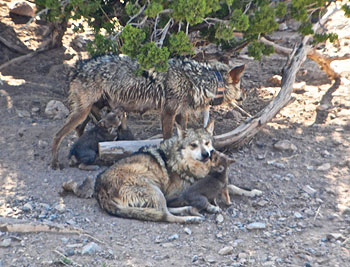

Picture of Mexican grey wolf in wild
Pictures thought to be an Aztec dog now
believied to be Mexican Grey Wolf
History
Highly regarded in pre-Columbian history the Mexican grey wolf perception from humans would change over time.
The Aztecs have a history, with wolves. The Aztecs
are known to have the Mexican grey wolves guide their warriors to the afterlife especially a difficult part of the journey where the warrior has to cross a river.
Though they once numbered in the thousands, these wolves were wiped out in the U.S. by the mid-1970s, with just a handful existing in zoos. In 1998, the U.S. Fish and Wildlife Service, led by Jamie Rappaport Clark (now president of Defenders of Wildlife), released 11 Mexican gray wolves back into the wild in Arizona.
Late seventies- by the late 1970s Mexico and America collaborated to save the species. They gathered the remaining Lobos which consisted of 4 males and 1 pregnant female
Recovery
Although their numbers have grown slowly, they remain the most endangered subspecies of wolf in the world because of compromised genetics, human intolerance and reluctance to release more individuals and bonded pairs to the wild.
As the population slowly recovers, Defenders continues to support scientists and policymakers to find the best path forward, including supporting adult releases and cross-fostering of pups. We also sponsored a Mexican biologist to come to the U.S. to gain experience working with the recovery team to support wolves in Mexico.
Defenders works directly with ranchers and tribal members to implement proven techniques to keep wolves and livestock safe. These include using range riders to watch over livestock, moving livestock away from wolf dens, erecting special fencing and more.
Lineage
The Mexican gray wolf is one of the most endangered mammals in North America. At last count, only 114 Mexican wolves survived in the Southwest in a single, small population occupying the Blue Range of eastern Arizona and western New Mexico. This population is beset by numerous threats, including widespread illegal killing as well as inbreeding caused by inadequate releases of more genetically diverse wolves from a captive population.
A federal judge in April 2018 rejected provisions in a 2015 federal management rule that unlawfully imposed roadblocks to recovery of the endangered Mexican wolf. The rule arbitrarily limited the lobos’ population numbers, banned them from needed recovery habitat, and loosened the rules against killing the animals in the wild.
The best available science indicates that recovery of the Mexican gray wolf requires at least three connected populations totaling approximately 750 individuals, a carefully managed reintroduction effort that prioritizes improving the genetic health of the animals and the establishment of at least two additional population centers in the Southern Rockies and in the Grand Canyon regions
The Mexican wolf was first described as a distinct subspecies in 1929 by Edward Nelson and Edward Goldman on account of its small size, narrow skull and dark pelt.This wolf is recognized as a subspecies of Canis lupus in the taxonomic authority Mammal Species of the World (2005).In 2019, a literature review of previous studies was undertaken by the National Academies of Sciences, Engineering, and Medicine. The position of the National Academies is that the historic population of Mexican wolf represents a distinct evolutionary lineage of gray wolf, and that modern Mexican wolves are their direct descendants. It is a valid taxonomic subspecies classified as Canis lupus baileyi
Picture of Mexican Grey Wolf in wild

Categories
Smallest of the grey wolves species; descendent of the Beringian wolf
-There are 40 subspecies of grey wolves; all of the subspecies wolves come in different sizes
the biggest of the grey wolves are Timber Wolves.
The wolves well known are artic,Northwestern,Plains,Coastal,Mexican,Tundra, tibetan and Himalayan,Iberian, italian, eurassian, persian/indian, arabian, Red, and finally Eastern.
Picture of Mexican Grey Wolf and pups
Taxonomy
Gray wolves (Canis lupus) migrated from Eurasia into North America 70,000–23,000 years ago and gave rise to at least two morphologically and genetically distinct groups. One group is represented by the extinct Beringian wolf and the other by the modern populations. One author proposes that the Mexican wolf’s ancestors were likely the first gray wolves to cross the Bering Land Bridge into North America during the Late Pleistocene after the extinction of the Beringian wolf,colonizing most of the continent until pushed southwards by the newly arrived ancestors of C. l. nubilus.
A haplotype is a group of genes found in an organism that are inherited together from one of their parents. Mitochondrial DNA (mDNA) passes along the maternal line and can date back thousands of years.[16] A 2005 study compared the mitochondrial DNA sequences of modern wolves with those from thirty-four specimens dated between 1856 and 1915. The historic population was found to possess twice the genetic diversity of modern wolves,which suggests that the mDNA diversity of the wolves eradicated from the western US was more than twice that of the modern population. Some haplotypes possessed by the Mexican wolf, the extinct Great Plains wolf, and the extinct Southern Rocky Mountain wolf were found to form a unique “southern clade”. All North American wolves group together with those from Eurasia, except for the southern clade which form a group exclusive to North America. The wide distribution area of the southern clade indicates that gene flow was extensive across the recognized limits of its subspecies.
In 2016, a study of mitochondrial DNA sequences of both modern and ancient wolves generated a phylogenetic tree which indicated that the two most basal North American haplotypes included the Mexican wolf and the Vancouver Island wolf.
In 2018, a study looked at the limb morphology of modern and fossil North American wolves. The major limb bones of the dire wolf, Beringian wolf, and most modern North American gray wolves can be clearly distinguished from one another. Late Pleistocene wolves on both sides of the Laurentide Ice Sheet — Cordilleran Ice Sheet possessed shorter legs when compared with most modern wolves. The Late Pleistocene wolves from the Natural Trap Cave, Wyoming and Rancho La Brea, southern California were similar in limb morphology to the Beringian wolves of Alaska. Modern wolves in the Midwestern USA and northwestern North America possess longer legs that evolved during the Holocene, possibly driven by the loss of slower prey. However, shorter legs survived well into the Holocene after the extinction of much of the Pleistocene megafauna, including the Beringian wolf. Holocene wolves from Middle Butte Cave (dated less than 7,600 YBP) and Moonshiner Cave (dated over 3,000 YBP) in Bingham County, Idaho were similar to the Beringian wolves. The Mexican wolf and pre-1900 samples of the Great Plains wolf (Canis lupus nubilus) resembled the Late Pleistocene and Holocene fossil gray wolves due to their shorter legs.